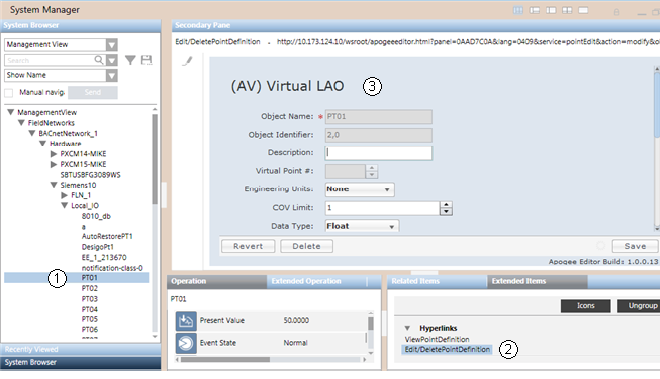

APOGEE Editors Workspace
Three of the editors that can be accessed in Desigo CC are almost identical to the editors seen in the Field Panel Web Server program:
- Point
- PPCL
- FLN Device
Some aspects of these editors differ slightly in Desigo CC, with different navigation paths and software user interface layouts. The fourth editor, TEC Subpoint, combines elements from the Field Panel Web Server TEC Init Editor and Point Log Report, and also includes new elements.
You access the APOGEE Editors as follows:
- Click on any object supported by this feature in the System Browser.
- The Related Items pane (Operating mode) or Extended Items pane (Engineering mode) displays one or more links for the object. The number of links depends on the object.
- Click the appropriate link.
- The Secondary pane opens and displays the editor.
